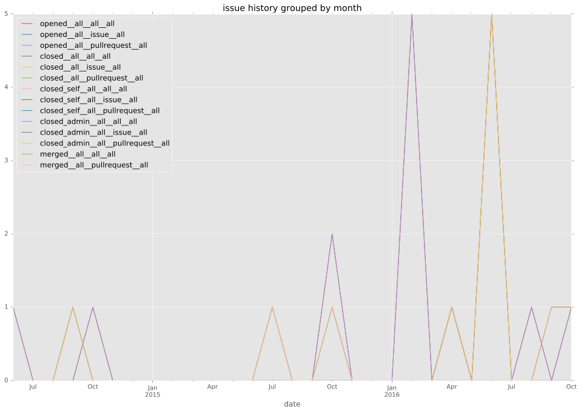
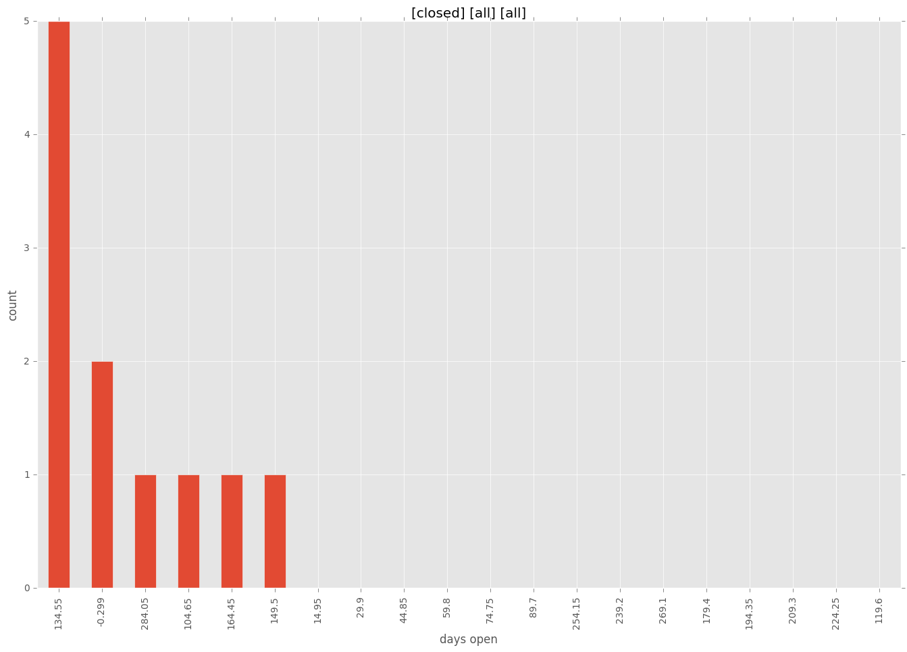
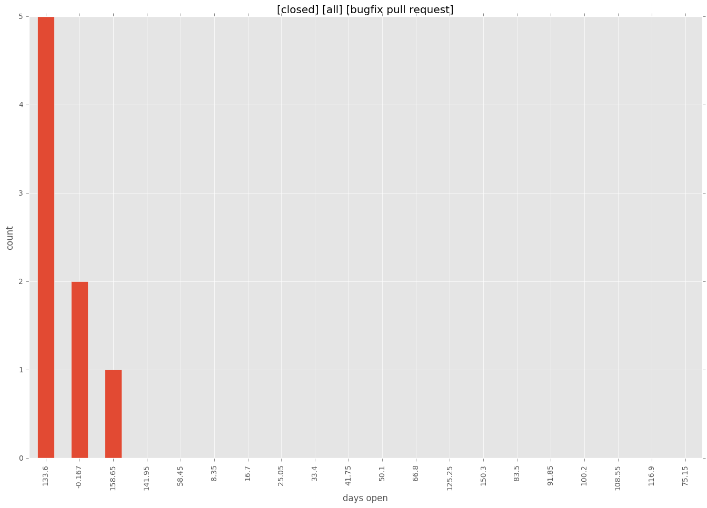
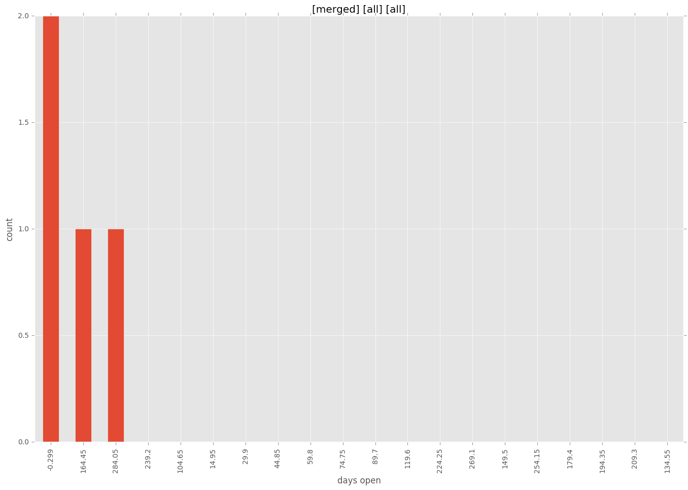
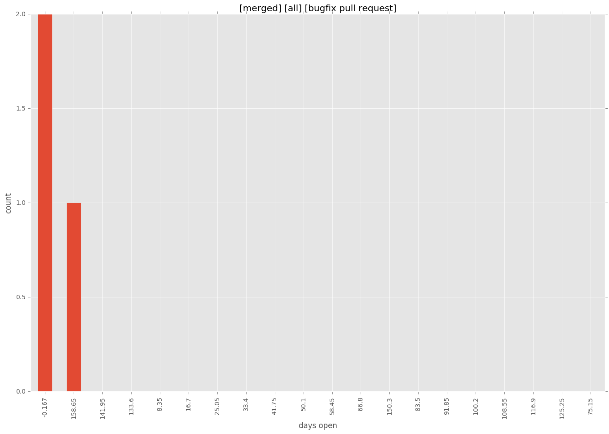
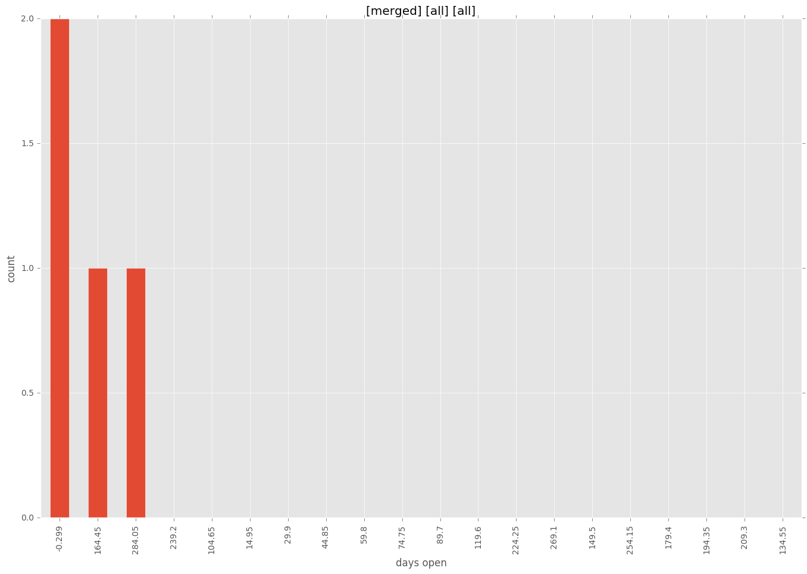
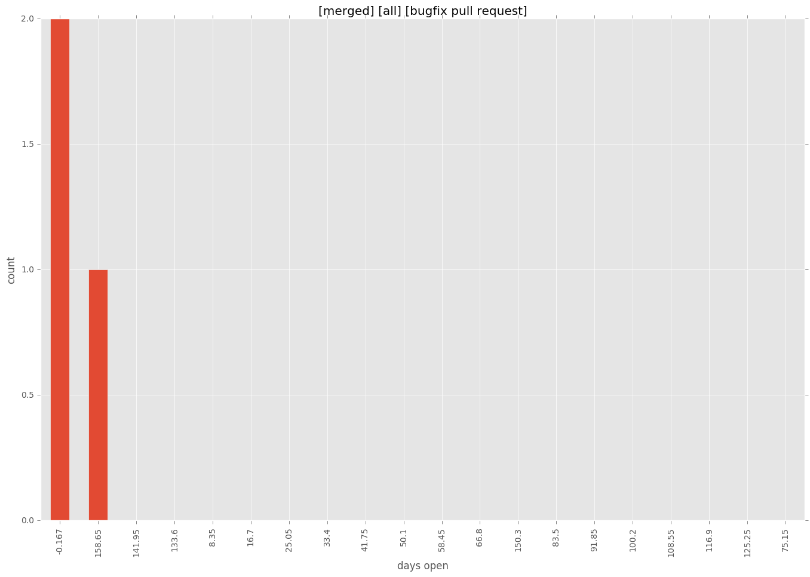

total issue counts
bugfix pull request: 9
feature pull request: 1
pullrequest: 12
new plugin: 2
issue history

days open by issue type
bugfix pull request
count: 11
std: 74.136728721
min: 0
max: 167
median: 136.0
mean: 92.3636363636
feature pull request
count: 1
std: nan
min: 110
max: 110
median: 110.0
mean: 110.0
all
count: 15
std: 95.8204173491
min: 0
max: 299
median: 136.0
mean: 125.466666667
pullrequest
count: 0
std: nan
min: nan
max: nan
median: nan
mean: nan
new plugin
count: 3
std: 81.4063879557
min: 158
max: 299
median: 299.0
mean: 252.0
closures grouped by total days open




 


